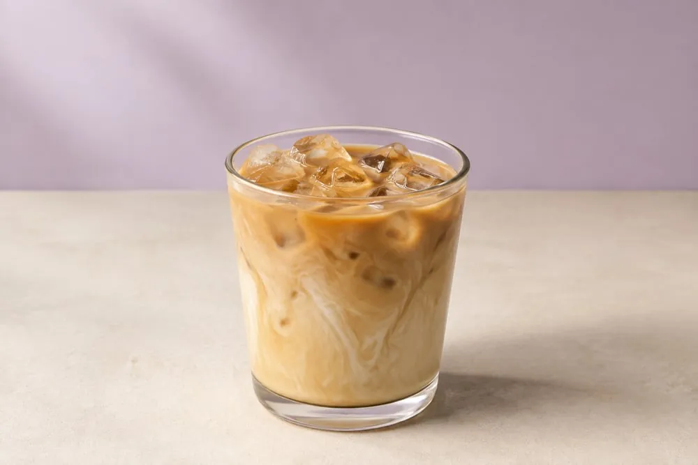

Nuestra misión
Acompañar tus días con bebidas y antojos preparados con cariño, una atención cercana y un espacio acogedor donde cada persona se sienta parte de la familia Lilas.
HECHO PARA DISFRUTAR
Café que abraza, frozzis que alegran y bobas que sorprenden. Encuentra tu próximo antojo favorito.
Encuentra tu antojo
ASÍ DE FÁCIL
Encuentra tu bebida o algo dulce.
Elige tamaño, bobas y cantidad.
Envía tu pedido y coordinamos contigo.
UN SUEÑO QUE CRECIÓ EN FAMILIA
Claudia, la menor de tres hermanos, siempre había soñado con tener su propia cafetería. Un día compartió esa idea con Romanet y Carlos, y lo que empezó como un deseo personal se convirtió en un proyecto de los tres.
Con el apoyo de sus hermanos, Claudia logró abrir Lilas. Nuestra historia nace de esa unión: de creer en una idea, acompañarse y hacer realidad un sueño en familia.
Acompañar tus días con bebidas y antojos preparados con cariño, una atención cercana y un espacio acogedor donde cada persona se sienta parte de la familia Lilas.
Ser la cafetería favorita de nuestra comunidad: un punto de encuentro reconocido por sus sabores, su calidez y sus buenos momentos, creciendo sin perder nuestra esencia familiar.